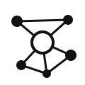

One map of the open-source MCP servers and the free public APIs of the world, with every connection between them, and one Rust MCP server that lets any AI assistant search that map and call the free APIs nobody has wrapped yet.
Une carte des serveurs MCP open source et des API publiques gratuites du monde, avec toutes leurs connexions, et un serveur MCP en Rust qui permet à n'importe quel assistant IA de chercher dans cette carte et d'appeler les API gratuites que personne n'a encore branchées.
The most-starred open-source MCP servers, ranked from GitHub, the official MCP registry, Smithery, ModelScope (China) and the main awesome lists, in English and Chinese.
Les serveurs MCP open source les plus étoilés, classés à partir de GitHub, du registre MCP officiel, de Smithery, de ModelScope (Chine) et des principales listes « awesome », en anglais et en chinois.
Merged from twelve community lists, including free LLM APIs and Chinese free-API lists. Each one was checked live: 3,111 answered.
Fusionnées à partir de douze listes communautaires, dont des API LLM gratuites et des listes chinoises. Chacune a été testée en direct : 3 111 ont répondu.
Free APIs that need no key and answered the live check: the ones the connector can call directly.
API gratuites sans clé qui ont répondu au test : celles que le connecteur peut appeler directement.
atlas_search, find_mcp_for_service, atlas_neighbors, list_free_apis, call_free_api, atlas_stats.call_free_api only makes HTTPS GET requests to the API's own host, connects only to addresses it has checked (no private or local networks), follows at most three redirects, sends no cookies or credentials, and caps answers at 100 KB.atlas_search, find_mcp_for_service, atlas_neighbors, list_free_apis, call_free_api, atlas_stats.call_free_api ne fait que des requêtes HTTPS GET vers l'hôte de l'API, ne se connecte qu'à des adresses vérifiées (jamais de réseau privé ou local), suit au plus trois redirections, n'envoie ni cookie ni identifiant et limite les réponses à 100 Ko.